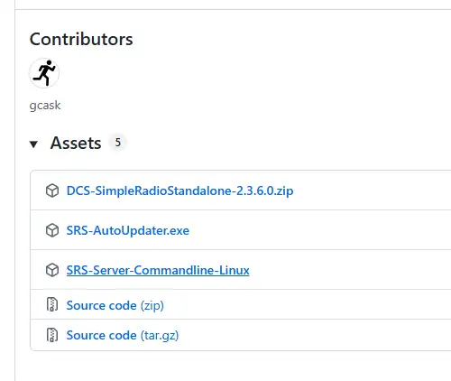
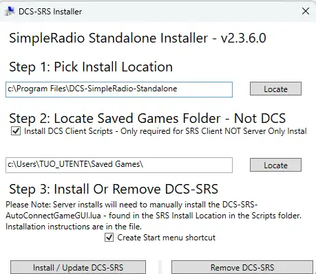
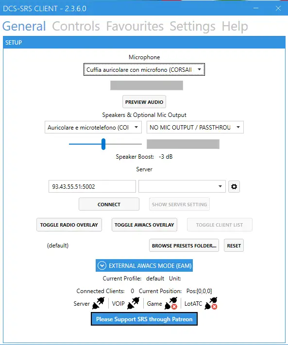
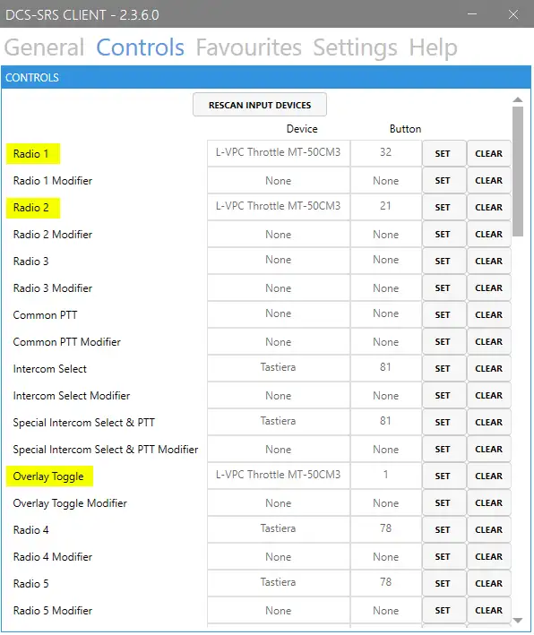
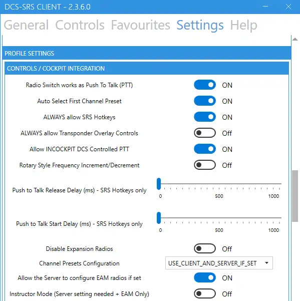
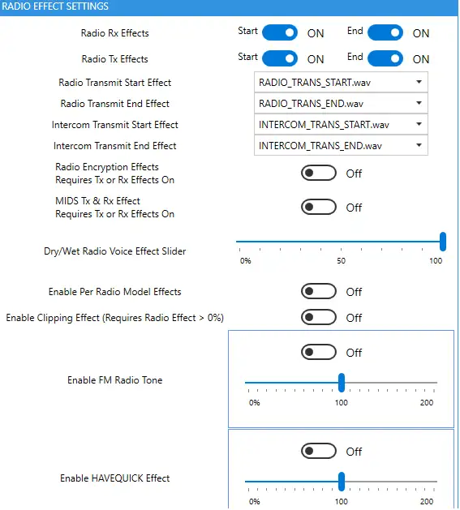
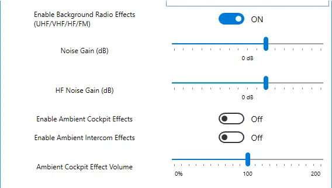
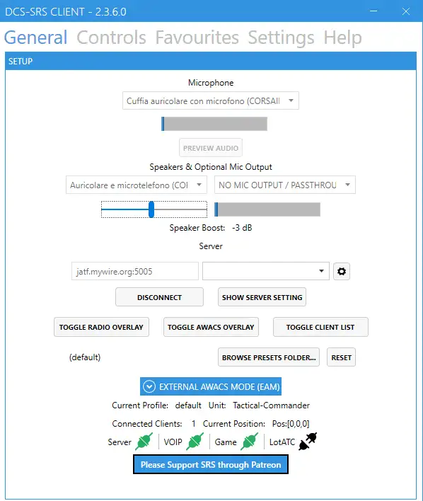

Scarica SRS
Apri la pagina ufficiale delle release e scarica l’ultima versione disponibile. Il metodo più comodo è usare SRS-AutoUpdater.exe, così potrai installare e aggiornare SRS in modo rapido.

Guida italiana completa per Simple Radio Standalone
Guida in italiano per installare, configurare e testare DCS SimpleRadio Standalone prima delle missioni Flying Donkeys.
SRS è il client radio usato in DCS per comunicazioni realistiche: il programma si integra con il cockpit, le frequenze e i canali radio del modulo in uso. Questa pagina è una versione italiana adattata per la squadriglia, con riferimenti alla guida ufficiale e alla documentazione del progetto.
Segui gli step nell’ordine. Prima di una missione controlla sempre microfono, cuffie, PTT e connessione al server SRS indicato nel briefing.
Apri la pagina ufficiale delle release e scarica l’ultima versione disponibile. Il metodo più comodo è usare SRS-AutoUpdater.exe, così potrai installare e aggiornare SRS in modo rapido.

Esegui l’installer. Controlla che la cartella di installazione e la cartella Saved Games / Partite Salvate siano corrette, poi premi Install / Update DCS-SRS. Se Windows mostra un avviso SmartScreen, verifica il file e procedi solo se proviene dal link ufficiale.

Apri SR-ClientRadio.exe dalla cartella di installazione. Puoi creare un collegamento sul desktop per averlo sempre pronto prima del volo.
SRS può essere avviato prima o dopo DCS, ma per abitudine è consigliato aprirlo prima di entrare nel server di missione.
Nella scheda General seleziona il tuo microfono in Microphone e le cuffie in Speakers & Optional Mic Output. Usa audio preview per verificare che il microfono entri correttamente.
Nel campo Server inserisci l’indirizzo indicato nel briefing, oppure lascia che l’auto-connect del server DCS ti colleghi automaticamente quando disponibile.

Nella scheda Controls assegna i tasti per Radio 1, Radio 2 e, se necessario, Radio 3. Per F/A-18C e F-16C di solito bastano le radio principali, ma fai sempre riferimento al modulo e al briefing.
Puoi usare un Common PTT separato oppure far funzionare il tasto radio direttamente come PTT tramite l’opzione nello step successivo.

Nella scheda Settings abilita Radio Switch works as Push To Talk (PTT) se vuoi che il tasto usato per selezionare la radio trasmetta anche su quella radio mentre lo tieni premuto.
Lascia attivi gli effetti radio se vuoi una resa più realistica. Per l’audio delle radio puoi scegliere Both, Left o Right in base alle tue preferenze e al setup cuffie.



L’overlay mostra radio attiva, frequenze e stato di trasmissione/ricezione. Puoi aprirlo dal pulsante toggle radio overlay o dal tasto che hai assegnato nella scheda Controls.
In alcuni moduli full fidelity la gestione reale passa dal cockpit; in altri casi potresti dover usare i tasti assegnati in SRS. Per capire il comportamento del modulo, usa il pulsante ? nell’overlay quando sei nell’aereo.
Entra nel server, verifica che le icone di connessione siano verdi e fai un radio check con un altro pilota. Controlla che la frequenza sia quella del briefing e che Discord non stia trasmettendo in parallelo con lo stesso microfono.
